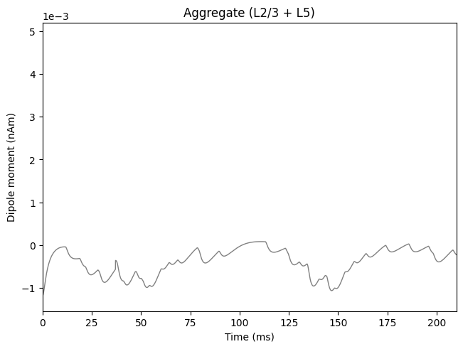

4.8: Parallelism: Using the MPI backend
This example demonstrates how to use the MPI backend for simulating
dipoles using hnn_core.
hnn_core can take advantage of MPI libraries such as OpenMPI to run a
single simulation using multiple CPU
processors. MPI lets you divide parts of your simulated network across
CPUs while allowing the CPUs to "talk" to each other, and can therefore
enable significant speed-up of individual simulations.
Note that to use MPI parallelism, you need either the
conda install or the
MPI Installation dependencies described in
our Installation Guide here.
Note that MPI parallelism is distinct from hnn_core's
use of Joblib
parallelism, which can be found here.
# Authors: Mainak Jas
# Blake Caldwell
# Austin Soplata
Let us import what we need from hnn_core:
import matplotlib.pyplot as plt
from hnn_core import simulate_dipole, jones_2009_model
from hnn_core.viz import plot_dipole
Following our Alpha
example, we will create our network and add a ~10 Hz "bursty"
drive:
net = jones_2009_model()
weights_ampa = {'L2_pyramidal': 5.4e-5, 'L5_pyramidal': 5.4e-5}
net.add_bursty_drive(
'bursty', tstart=50., burst_rate=10, burst_std=20., numspikes=2,
spike_isi=10, n_drive_cells=10, location='distal',
weights_ampa=weights_ampa, event_seed=278)
Finally, we will simulate using the MPIBackend
class. This will start the simulation across the number of
processors (cores) specified by n_procs using MPI.
from hnn_core import MPIBackend
with MPIBackend(n_procs=4, mpi_cmd='mpiexec'):
dpls = simulate_dipole(net, tstop=210., n_trials=1)
Out:
MPI will run 1 trial(s) sequentially by distributing network neurons over 4 processes.
/opt/anaconda3/envs/website-redesign-mpi/bin/nrniv:10: DeprecationWarning: pkg_resources is deprecated as an API. See https://setuptools.pypa.io/en/latest/pkg_resources.html
from pkg_resources import working_set
/opt/anaconda3/envs/website-redesign-mpi/bin/nrniv:10: DeprecationWarning: pkg_resources is deprecated as an API. See https://setuptools.pypa.io/en/latest/pkg_resources.html
from pkg_resources import working_set
/opt/anaconda3/envs/website-redesign-mpi/bin/nrniv:10: DeprecationWarning: pkg_resources is deprecated as an API. See https://setuptools.pypa.io/en/latest/pkg_resources.html
from pkg_resources import working_set
/opt/anaconda3/envs/website-redesign-mpi/bin/nrniv:10: DeprecationWarning: pkg_resources is deprecated as an API. See https://setuptools.pypa.io/en/latest/pkg_resources.html
from pkg_resources import working_set
numprocs=4
Loading custom mechanism files from /opt/anaconda3/envs/website-redesign-mpi/lib/python3.12/site-packages/hnn_core/mod/arm64/.libs/libnrnmech.so
Building the NEURON model
Loading custom mechanism files from /opt/anaconda3/envs/website-redesign-mpi/lib/python3.12/site-packages/hnn_core/mod/arm64/.libs/libnrnmech.so
Loading custom mechanism files from /opt/anaconda3/envs/website-redesign-mpi/lib/python3.12/site-packages/hnn_core/mod/arm64/.libs/libnrnmech.so
Loading custom mechanism files from /opt/anaconda3/envs/website-redesign-mpi/lib/python3.12/site-packages/hnn_core/mod/arm64/.libs/libnrnmech.so
[Done]
Trial 1: 0.03 ms...
Trial 1: 10.0 ms...
Trial 1: 20.0 ms...
Trial 1: 30.0 ms...
Trial 1: 40.0 ms...
Trial 1: 50.0 ms...
Trial 1: 60.0 ms...
Trial 1: 70.0 ms...
Trial 1: 80.0 ms...
Trial 1: 90.0 ms...
Trial 1: 100.0 ms...
Trial 1: 110.0 ms...
Trial 1: 120.0 ms...
Trial 1: 130.0 ms...
Trial 1: 140.0 ms...
Trial 1: 150.0 ms...
Trial 1: 160.0 ms...
Trial 1: 170.0 ms...
Trial 1: 180.0 ms...
Trial 1: 190.0 ms...
Trial 1: 200.0 ms...
plot_dipole(dpls, show=False)
plt.show()
Out:
<Figure size 640x480 with 1 Axes>
